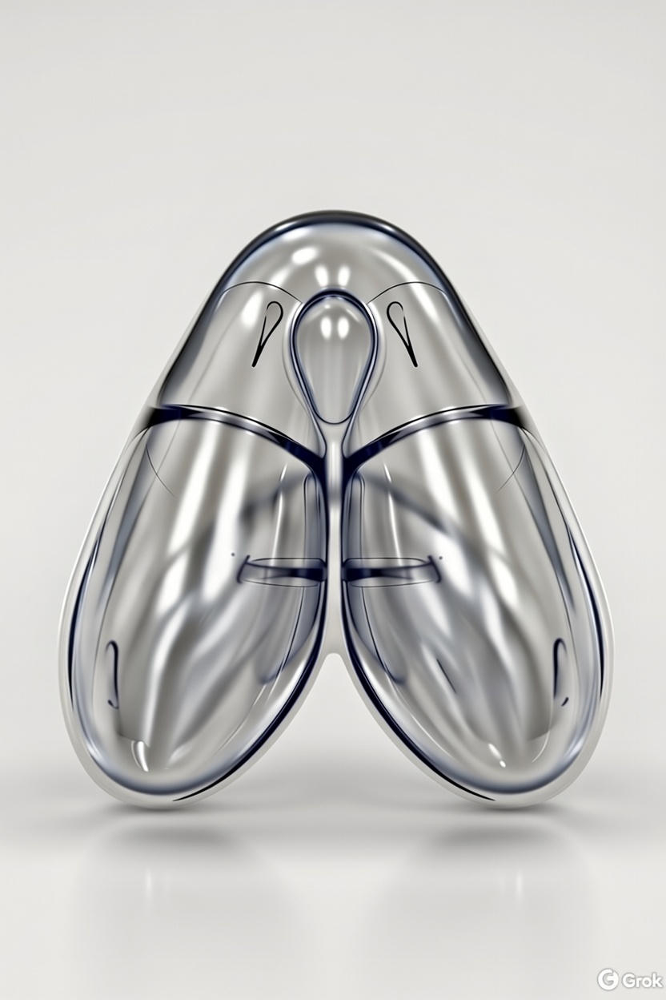

V-Contour Dual-Therapy System
Advanced Automated Vacuum Stimulation Device
System Overview
What is the V-Contour Dual-Therapy System?
The V-Contour is a sophisticated Automated Vacuum Stimulation Device - an electromechanical system that applies controlled vacuum pressure to the vulva and clitoris for inducing sexual arousal and orgasm. It is designed as a "hands-free" device that can automatically bring a user to climax through precisely controlled vacuum patterns.
How It Works
The system uses a specially designed A-shaped vacuum cup that creates an airtight seal against the body. A vacuum pump creates negative pressure (suction) inside the cup, which draws blood into the erectile tissues (clitoris, labia), causing engorgement and heightened sensitivity - similar to natural sexual arousal.
By varying the vacuum pressure in specific patterns and timing sequences, the device can replicate and optimize the physiological stages of sexual response, from initial arousal through climax.
Key Innovations
- Dual-Chamber Architecture: Independent control of outer seal chamber and inner clitoral cylinder
- Active Engorgement: Sustained vacuum induces clitoral erection before stimulation begins
- Air-Pulse Technology: 5-13 Hz rapid oscillation replicates oral stimulation sensation
- Anti-Detachment System: 100Hz monitoring maintains seal through body movements
- Physiologically-Optimized Patterns: Based on observed arousal response data
- Open-Channel Design: Fluid drainage and simultaneous access to vaginal/urethral openings
- Medical-Grade Safety: Multiple redundant safety systems with hard-coded limits
- Touch-Optimized GUI: Single-button operation on 50-inch medical displays
✓ Production Status: READY
All development complete. Fully functional system with comprehensive testing, CI/CD pipeline, and professional packaging for deployment.
Hardware Components
Core Controller
Raspberry Pi 4 (8GB RAM)
Function: Main system controller
- Quad-core ARM Cortex-A72 processor
- Runs Raspberry Pi OS (32-bit)
- Built-in Wi-Fi and Bluetooth
- GPIO, SPI, and PWM interfaces

Raspberry Pi 4 Model B (8GB RAM recommended)
50-inch HDMI Touch Display
Function: User interface
- 1920x1080 minimum resolution
- Capacitive touch support
- Medical-grade display quality
- 30 FPS GUI update rate
Analog-to-Digital Conversion
MCP3008 ADC (Adafruit)
Function: Converts analog pressure sensor signals to digital readings
- 8-channel, 10-bit resolution
- SPI interface (1 MHz speed)
- 3.3V operation
- Channel 0: AVL (Outer chamber) sensor
- Channel 1: Tank vacuum sensor
- Channel 2: Clitoral cylinder sensor

MCP3008 8-Channel 10-Bit ADC (Adafruit #856)
SPI Wiring Connections
| Raspberry Pi Pin | MCP3008 Pin | Function |
|---|---|---|
| GPIO 11 (SCK) | CLK | SPI Clock |
| GPIO 10 (MOSI) | DIN | Data In |
| GPIO 9 (MISO) | DOUT | Data Out |
| GPIO 8 (CE0) | CS | Chip Select |
| 3.3V | VDD, VREF | Power & Reference |
| GND | AGND, DGND | Ground |
Pressure Sensors
3× MPX5010DP Differential Pressure Sensors
Function: Measure vacuum pressure in different chambers
- Sensor 1 (AVL): Outer A-seal chamber pressure (anti-detachment monitoring)
- Sensor 2 (Tank): Vacuum reservoir pressure (system monitoring)
- Sensor 3 (Clitoral): Inner clitoral cylinder pressure (air-pulse feedback)
Specifications:
- Measurement range: 0-10 kPa (0-75 mmHg)
- Output: 0.2V @ 0 kPa, 4.7V @ 10 kPa
- Accuracy: ±2.5% full scale
- Sampling rate: 50 Hz (AVL/Tank), 100 Hz (Clitoral)

MPX5010DP Differential Pressure Sensor (0-10 kPa / 0-75 mmHg)
Solenoid Valves & Vacuum Control
5× 12V DC Solenoid Valves
Function: Control vacuum routing and venting
- SOL1 (GPIO 17): Outer chamber vacuum valve
- SOL2 (GPIO 27): Outer chamber vent valve
- SOL3 (GPIO 22): Tank vent valve (safety)
- SOL4 (GPIO 23): Clitoral cylinder vacuum valve
- SOL5 (GPIO 24): Clitoral cylinder vent valve
Specifications: 12V DC, normally closed, fast response time
12V DC Solenoid Valve (Normally Closed, Barbed Fittings)
Fast response time, GPIO controlled via relay/transistor
DC Vacuum Pump
Function: Main vacuum source
- 12V DC motor
- PWM speed control (5000 Hz)
- Variable vacuum generation
- Fills vacuum storage tank
Control:
- Enable: GPIO 25
- PWM: GPIO 18
12V DC Diaphragm Vacuum Pump (PWM Speed Control)
Variable speed control via GPIO PWM signal
Motor Driver
L293D Motor Driver IC
Function: Controls vacuum pump speed via PWM
- Dual H-bridge motor driver
- Handles up to 600mA per channel
- Enable pin: GPIO 25
- PWM input: GPIO 18
- Motor power: 12V supply
Wiring:
Raspberry Pi L293D Vacuum Pump
GPIO 25 (Enable) ---> EN
GPIO 18 (PWM) ---> IN1
IN2 -----------> GND
OUT1/OUT2 -----> Motor leads
VM ------------> 12V
GND -----------> GND
L293D Dual H-Bridge Motor Driver IC (DIP-16 Package)
16-pin dual inline package with integrated flyback diodes
Power Supply
5V Power Supply
For Raspberry Pi 4
- USB-C connector
- Minimum 3A current
- Official Raspberry Pi power supply recommended
12V Power Supply
For vacuum pump, solenoid valves, and L293D
- Minimum 3A current capacity
- Common ground with Raspberry Pi
- Regulated DC output
Additional Components
- Vacuum storage tank (reservoir)
- Silicone tubing (3mm ID / 5mm OD) for vacuum lines
- T-connectors for vacuum routing
- Emergency stop button (GPIO 21)
- Breadboard or custom PCB for connections
- Heat shrink tubing and electrical tape
- Mounting hardware for sensors and components
Dual-Chamber Vacuum System Architecture
A-Contour Cup Design
Revolutionary Dual-Chamber Architecture
The A-Contour cup is a purpose-built vacuum interface engineered specifically for female vulva anatomy. Unlike generic dome-shaped cups, the A-Contour features an anatomical "A" shape that provides superior attachment, targeted stimulation, and hygiene.
Problems with Traditional Dome Cups
- ❌ Generic dome shape doesn't match vulva anatomy
- ❌ Single chamber cannot provide both attachment AND targeted stimulation
- ❌ Closed design traps fluids (urine, vaginal secretions, ejaculate) inside
- ❌ No access to urethra or vaginal opening for simultaneous play
- ❌ Uniform suction cannot replicate localized oral stimulation sensations
The A-Contour Solution
Anatomical A-Shape Design
The "A" shape represents three key anatomical features:
- A-Apex Triangle: Enclosed triangular space at the top housing the 1" diameter (25mm) circular clitoral cylinder
- A-Crossbar: Internal diaphragm separating the clitoral chamber from outer chambers
- A-Legs: Two bilateral outer vacuum chambers providing 80mm total vulva coverage
Top View (Plan View)
Top View with Zone 2 (Clitoral Cylinder)
A-Contour Cup - Current Design Iteration

3D Render: Current design iteration showing the A-shaped vacuum chamber structure with the clitoral cylinder at the apex. This prototype demonstrates the dual-chamber architecture with transparent walls for visualization of the internal vacuum zones and open channel design.
Side View (3D Cross-Section)
Dual-Chamber Architecture
| Zone | Name | Function | Vacuum Type | Valve Control |
|---|---|---|---|---|
| Zone 1 | Outer A-Seal Chamber (A-legs) | Attachment, engorgement, labia stimulation | Constant/slow variation | SOL1/SOL2 |
| Zone 2 | Clitoral Cylinder (A-apex) | Targeted clitoral air-pulse stimulation | Rapid pulsing (5-13 Hz) OR sustained | SOL4/SOL5 |
Zone 1: Outer A-Seal Chamber (A-Legs)
- Two A-legs create peripheral seal around vulva (labia majora/minora)
- Maintains sustained vacuum (30-50 mmHg continuous) for blood engorgement
- Causes active tissue engorgement → increased sensitivity and clitoral erection
- Anti-detachment system monitors this zone only
- 80mm total coverage area
Zone 2: Clitoral Cylinder (A-Apex)
- 1" diameter circular cylinder (25mm) positioned at A-apex triangle, directly over clitoral glans only
- Separated from outer chambers by A-crossbar (internal diaphragm)
- Independent vacuum supply enables two operating modes:
- Sustained vacuum mode: Continuous negative pressure for clitoral engorgement
- Air-pulse mode: Rapid pressure oscillation (5-13 Hz) for stimulation
- Replicates "air pulse" sensation (like Womanizer/Satisfyer) at industrial scale
🔑 CRITICAL DIFFERENTIATOR: Active Engorgement Capability
Commercial air-pulse toys (Womanizer, Satisfyer, LELO) only provide oscillating pressure waves for stimulation—they CANNOT create sustained vacuum for tissue engorgement. They rely on natural arousal to engorge the clitoris before/during use.
The A-Contour dual-chamber system separates these functions:
- Outer A-seal (A-legs): Sustained vacuum for vulva/labia engorgement
- Clitoral cylinder (A-apex): Sustained vacuum for clitoral engorgement OR oscillating air-pulse for stimulation
This allows the A-Contour to actively induce clitoral erection/engorgement, rather than waiting for natural arousal to occur.
Active Engorgement Benefits:
- Faster arousal: Engorge the clitoris BEFORE beginning air-pulse stimulation
- Maintained engorgement: Sustained outer vacuum keeps tissue engorged throughout session
- Faster orgasm: Optimal clitoral erection from the start reduces time to climax
- Enhanced sensitivity: Engorged tissue has ~8,000 nerve endings more exposed
- Consistent response: Does not rely on the user's natural arousal state
- Dual-mode flexibility: Can switch between engorgement and stimulation dynamically
Open-Channel Design Benefits
The A-shape creates an open channel by sealing around the periphery of the vulva while leaving the urethra and vaginal opening completely exposed between the two A-legs. See the detailed Side View (Cross-Section) diagram above for visual representation.
Open-Channel Advantages:
- Hygiene: Fluids (urine, vaginal lubrication, ejaculate) drain away from vacuum system
- Squirting-Compatible: Female ejaculation doesn't contaminate vacuum lines
- Urethral Access: Enables simultaneous urethral sounding while vacuum active
- Vaginal Access: Allows insertable toys during vacuum therapy
- Easy Cleanup: Vacuum hoses remain dry; only cup exterior needs cleaning
A-Contour Cup 3D Render

3D rendering showing the anatomical A-shape design with dual chambers
Safety Features
⚠️ Medical-Grade Safety Systems
The V-Contour system implements multiple redundant safety layers designed to meet medical device standards (IEC 60601-1 considerations). Safety is the highest priority in all system operations.
1. Anti-Detachment Monitoring System
The most critical safety feature prevents cup detachment during use, especially during arousal and orgasm when involuntary body movements occur.
How It Works
- Monitoring Rate: 100 Hz (10ms intervals)
- Sensor: AVL pressure sensor (outer chamber only)
- Detection: Pressure drop indicates seal breaking
- Response: Immediately increases vacuum via SOL1 to re-establish seal
Response Modes
| Mode | Response Time | Used During |
|---|---|---|
| Standard | 100ms | Initial phases (arousal build-up) |
| Enhanced | 25ms | Climax phase (critical timing) |
| Gentle | 150ms | Recovery periods |
During climax phase, the system responds in 25ms - fast enough to maintain seal through involuntary body movements.
2. Pressure Limits & Monitoring
| Parameter | Outer Chamber (A-legs) | Clitoral Cylinder (A-apex) |
|---|---|---|
| Operating Range | 30-60 mmHg | 20-75 mmHg |
| Warning Threshold | 65 mmHg | 70 mmHg |
| Maximum Safe Limit | 75 mmHg (hard-coded) | 80 mmHg (hard-coded) |
| Monitoring Rate | 50 Hz | 100 Hz |
Pressure Safety Actions
- Warning Level: Visual/audio alert, pattern intensity reduced
- Maximum Level: Automatic vent valve opening (SOL2 or SOL5)
- Sensor Timeout: Emergency stop if no valid readings for 2 seconds
- Overpressure Protection: Independent for each chamber
3. Emergency Stop System
Hardware Emergency Stop
- Physical button on GPIO 21
- Interrupt-driven (immediate response)
- Stops pump, opens all vent valves
- Releases all vacuum pressure
- Cannot be overridden by software
Software Emergency Stop
- ESC key on keyboard
- Large touch button on GUI
- Automatic triggers on critical errors
- Sensor failures
- Communication timeouts
4. Sensor Error Detection
- Range Validation: Readings outside 0-100 mmHg trigger error
- Timeout Detection: No valid reading for 2 seconds = emergency stop
- Noise Filtering: Moving average filter removes electrical noise
- Calibration Checks: Automatic zero-point calibration on startup
- Redundancy: Multiple sensors provide cross-validation
5. Fail-Safe Design Principles
✓ System Fails to Safe State
- Power Loss: All valves close, pump stops (normally-closed valves)
- Software Crash: Watchdog timer triggers emergency stop
- Sensor Failure: System assumes worst-case and vents all pressure
- Communication Loss: Hardware timeout circuits activate safety shutdown
6. Safety Monitoring Threads
| Thread | Rate | Function |
|---|---|---|
| Data Acquisition | 50 Hz | Sensor sampling, basic safety checks |
| Anti-Detachment | 100 Hz | Seal integrity monitoring, vacuum correction |
| Safety Manager | 10 Hz | Pressure limits, emergency stop coordination |
| GUI Update | 30 FPS | Display updates, user alerts |
Software Architecture
Technology Stack
Core Technologies
- Language: C++17
- Framework: Qt 5 (Core, Widgets, Charts)
- Build System: CMake 3.16+
- Platform: Raspberry Pi OS (32-bit)
Hardware Libraries
- GPIO Control: libgpiod v2.2.1 (modern, future-proof)
- SPI Communication: Linux /dev/spidev interface
- Threading: Qt threading framework + pthread
System Architecture Overview
Initialization Flow
main()
└─> QApplication (High DPI, touch support)
└─> ModernMedicalStyle (medical device UI theme)
└─> VacuumController::initialize()
└─> HardwareManager (GPIO, SPI, sensors, actuators)
└─> SafetyManager (pressure limits, emergency stop)
└─> PatternEngine (stimulation patterns)
└─> AntiDetachmentMonitor (seal integrity)
└─> ThreadManager (real-time threads)
└─> CalibrationManager (sensor calibration)
└─> MainWindow (50-inch touch GUI)
└─> startMonitoringThreads()
Subsystem Responsibilities
HardwareManager (src/hardware/)
- MCP3008.cpp: SPI communication with ADC, sensor calibration
- SensorInterface.cpp: Pressure readings with noise filtering
- ActuatorControl.cpp: Pump PWM, valve control via libgpiod v2.x
- ClitoralOscillator.cpp: High-speed air-pulse generation (5-13 Hz)
SafetyManager (src/safety/)
- 10Hz monitoring loop for pressure limits
- Emergency stop coordination across all subsystems
- Sensor timeout detection (2-second threshold)
- Automatic recovery from transient errors
PatternEngine (src/patterns/)
- Pattern step execution with precise timing
- Speed multipliers for pattern customization
- Anti-detachment mode switching per phase
- Infinite loop support for continuous patterns
- Dual-chamber coordination (outer + clitoral)
AntiDetachmentMonitor (src/safety/)
- 100Hz pressure monitoring (10ms intervals)
- Automatic vacuum correction via SOL1
- Phase-specific sensitivity adjustment
- Configurable response delay (25-150ms)
ThreadManager (src/threading/)
- DataAcquisitionThread: 50Hz sensor sampling
- GuiUpdateThread: 30 FPS display updates
- SafetyThread: Integrated safety checks
- Thread-safe communication via Qt signals/slots
GUI Components (src/gui/)
Designed for 50-inch medical touch displays with large, accessible controls:
Main Interface
- MainWindow: Stacked panel navigation
- PressureMonitor: Real-time dual-gauge display
- PatternSelector: One-touch pattern start
- SafetyPanel: Emergency controls
Advanced Features
- SettingsPanel: System configuration
- CustomPatternEditor: User pattern creation
- SystemDiagnosticsPanel: Hardware testing
- CalibrationInterface: Sensor calibration
Keyboard Shortcuts
| Key | Function |
|---|---|
| ESC | Emergency Stop |
| F1 | Main Control Panel |
| F2 | Safety Panel |
| F3 | Settings |
| F4 | Diagnostics |
Technical Specifications
System Specifications
| Component | Specification |
|---|---|
| Platform | Raspberry Pi 4 (8GB RAM recommended) |
| Display | 50-inch HDMI touch display (1920x1080 minimum) |
| Framework | Qt 5, C++17 |
| GPIO Library | libgpiod v2.2.1 (modern, kernel-based) |
| ADC | MCP3008 (10-bit, 8-channel, SPI) |
| Pressure Sensors | 3× MPX5010DP (0-75 mmHg differential) |
| Pump Control | PWM via L293D motor driver (5000 Hz) |
| Solenoid Valves | 5× 12V DC normally-closed |
| Vacuum Chambers | 2 (Outer A-seal + Clitoral cylinder) |
Performance Specifications
| Parameter | Value |
|---|---|
| Sensor Sampling Rate | 50 Hz (AVL/Tank), 100 Hz (Clitoral) |
| Safety Monitoring Rate | 100 Hz (anti-detachment), 10 Hz (general) |
| GUI Update Rate | 30 FPS |
| PWM Frequency | 5000 Hz (pump speed control) |
| SPI Speed | 1 MHz |
| Air-Pulse Frequency Range | 5-13 Hz (optimal for orgasm induction) |
| Anti-Detachment Response | 25ms (enhanced mode during climax) |
Pressure Specifications by Chamber
| Parameter | Outer A-Seal Chamber | Clitoral Cylinder |
|---|---|---|
| Purpose | Attachment + engorgement | Air-pulse stimulation |
| Operating Range | 30-60 mmHg | 20-75 mmHg |
| Attachment Threshold | 35 mmHg minimum | N/A |
| Warning Threshold | 65 mmHg | 70 mmHg |
| Maximum Safe Limit | 75 mmHg (hard-coded) | 80 mmHg (hard-coded) |
| Typical Operating | 40-55 mmHg (constant) | 30-70 mmHg (pulsing) |
GPIO Pin Assignments
| GPIO Pin | Function | Component |
|---|---|---|
| GPIO 17 | SOL1 - Outer chamber vacuum valve | Outer A-seal |
| GPIO 27 | SOL2 - Outer chamber vent valve | Outer A-seal |
| GPIO 22 | SOL3 - Tank vent valve | Safety |
| GPIO 23 | SOL4 - Clitoral cylinder vacuum valve | Clitoral cylinder |
| GPIO 24 | SOL5 - Clitoral cylinder vent valve | Clitoral cylinder |
| GPIO 25 | Pump enable | L293D motor driver |
| GPIO 18 | Pump PWM | L293D motor driver |
| GPIO 21 | Emergency stop button | Safety |
| GPIO 11 | SPI SCK | MCP3008 ADC |
| GPIO 10 | SPI MOSI | MCP3008 ADC |
| GPIO 9 | SPI MISO | MCP3008 ADC |
| GPIO 8 | SPI CS | MCP3008 ADC |
Complete Parts List
| Component | Quantity | Specifications |
|---|---|---|
| Raspberry Pi 4 | 1 | 8GB RAM recommended |
| 50-inch HDMI Touch Display | 1 | 1920x1080 minimum |
| MCP3008 ADC | 1 | 8-channel, 10-bit, SPI |
| MPX5010DP Pressure Sensor | 3 | 0-10 kPa (0-75 mmHg) |
| 12V DC Solenoid Valve | 5 | Normally closed, fast response |
| DC Vacuum Pump | 1 | 12V, diaphragm type |
| L293D Motor Driver IC | 1 | Dual H-bridge, 600mA per channel |
| Vacuum Storage Tank | 1 | Reservoir for stable vacuum supply |
| Silicone Tubing | As needed | 3mm ID / 5mm OD |
| T-Connectors | As needed | For vacuum line routing |
| Emergency Stop Button | 1 | Normally open, momentary |
| 5V Power Supply | 1 | USB-C, 3A minimum (for Pi) |
| 12V Power Supply | 1 | 3A minimum (for pump/valves) |
| A-Contour Vacuum Cup | 1 | Custom dual-chamber design |
Stimulation Patterns
Physiologically-Optimized Pattern Design
All patterns are designed based on observed physiological arousal response data, optimized for inducing and maintaining sexual arousal through to orgasm.
Dual-Chamber Pattern Architecture
All stimulation patterns operate on the dual-chamber system, with independent control of the outer A-seal and inner clitoral cylinder:
| Chamber | Function | Behavior During Patterns | Configurable Range |
|---|---|---|---|
| Outer A-Seal (A-legs) | Sustained vulva/labia engorgement + anti-detachment | Constant pressure throughout all phases | 30-60% (default: 50%) |
| Clitoral Cylinder (A-apex) | Variable stimulation patterns | Phase-dependent intensity and frequency | Per-pattern settings |
⚙️ Outer Chamber Settings (All Patterns)
The outer A-seal chamber maintains sustained vacuum throughout the entire session:
- Default Intensity: 50% constant vacuum
- Adjustable Range: 30-60% (user-configurable)
- Persistence: Maintains constant pressure through all pattern phases
- Independence: Outer chamber settings are separate from clitoral pattern intensity
- Anti-Detachment: Ensures device remains sealed during body movements and contractions
- Engorgement: Sustained vacuum keeps vulva/labia tissue engorged for enhanced sensitivity
Note: Pattern intensity sliders (50-100%) affect only the clitoral cylinder. Outer chamber has its own dedicated control.
⚠️ Individual Variation
Orgasm timing varies significantly between individuals. Some women may orgasm in 5-10 minutes, while others may take 30-60+ minutes. All pattern durations shown are baseline defaults that should be adjusted to individual response. The system supports:
- Extended Durations: All phases can be lengthened via speed control (0.1x-3.0x)
- Manual Phase Control: Option to manually advance phases when ready
- Loop Phases: Repeat arousal build-up phases until climax approaches
- No Time Pressure: System never forces progression - user controls timing
🎛️ Stimulation Mode Preference
Women have different preferences for clitoral stimulation type:
| Preference | Stimulation Type | Pattern Setting |
|---|---|---|
| Steady Pressure | Sustained vacuum without pulsing | Use "Sustained Vacuum Mode" - constant clitoral suction |
| Pulsing/Oscillation | Rhythmic air-pulse waves (5-13 Hz) | Use "Air-Pulse Mode" - variable frequency pulsing |
| Combination | Sustained base + gentle oscillation overlay | Use "Hybrid Mode" - steady vacuum with subtle pulses |
The clitoral cylinder can operate in any of these modes. Experiment to find what works best.
Available Pattern Modes
All patterns below describe clitoral cylinder (A-apex) behavior. The outer A-seal (A-legs) maintains constant 50% pressure (adjustable 30-60%) throughout.
1. Automated Orgasm Pattern (Configurable)
A 7-phase arousal-to-climax-to-recovery sequence with fully adjustable timing:
Default baseline: ~6.5 minutes. Recommended: Adjust speed to 0.3x-0.5x for 15-30+ minute sessions, or use manual phase control.
| Phase | Time Range | Intensity | Purpose |
|---|---|---|---|
| Phase 0: Engorgement | 0:00-0:30 | Sustained vacuum (no pulse) | Actively induce clitoral erection before stimulation |
| Phase 1: Initial Sensitivity | 0:30-1:30 | 35% → 55% | Gentle air-pulse introduction on engorged tissue |
| Phase 2: Adaptation Period | 1:30-3:00 | 60% ± 8% | Body adaptation, muscle tension decreases |
| Phase 3: Arousal Build-up | 3:00-4:30 | 60% → 85% | Match building arousal, 8-10 Hz frequency |
| Phase 4: Pre-Climax Tension | 4:30-5:15 | 85% ± 8% | Full body tension, 10-12 Hz optimal frequency |
| Phase 5: Climax/Orgasm | 5:15-5:45 | 70-90% (adjustable) | Maintain stimulation through contractions, 11-13 Hz |
| Phase 6: Recovery | 5:45-6:30 | 30% → 0% | Gentle cooldown for post-orgasm hypersensitivity |
Orgasm Detection
The system automatically detects orgasm onset by monitoring pressure changes in the sealed chambers. Note: The vaginal canal remains open (open-channel design), so detection relies on clitoral and vulvar tissue responses only.
Detection Mechanism
During orgasm, rhythmic contractions occur in the erectile tissue under the sealed chambers:
- Clitoral Tissue Pulsing (Inner Cylinder): The clitoral glans, body, and internal crura contract rhythmically during orgasm. This tissue is sealed inside the clitoral cylinder, so its pulsing directly causes pressure oscillations detected by the inner chamber sensor.
- Vestibular Bulb Contractions (Outer Chamber): The vestibular bulbs are erectile tissue located beneath the labia minora. During orgasm, they contract rhythmically. Since the labia are sealed by the outer A-seal, these contractions cause detectable pressure changes in the outer chamber.
- Labial Engorgement Pulses: Blood vessels in the labia pulse with orgasm rhythms, contributing to outer chamber pressure fluctuations.
Detection Signals
- Contraction Band Power: 0.8-1.2 Hz rhythmic pressure oscillations (the signature frequency of orgasmic contractions)
- Pressure Variance: Increased fluctuation amplitude in vacuum readings during arousal peak
- Heart Rate Data: Optional HR sensor for heart rate acceleration detection
⚙️ Adjustable Intensity Settings
All phase intensities can be customized to individual sensitivity levels:
- Outer Chamber (A-legs): 30-60% (default: 50%) - sustained engorgement pressure
- Climax Intensity: 70-90% (default: 85%) - reduce for sensitive users
- Climax Frequency: 8-13 Hz (default: 11 Hz) - lower Hz for gentler sensation
- Overall Intensity Slider: Scale clitoral pattern 50-100%
- Speed Control: 0.5x to 2.0x pattern timing
2. Triple Orgasm Pattern
Three complete 7-phase orgasm cycles with recovery periods (~20 minutes):
- Cycle 1: Full 7-phase progression starting at 35% (~6.5 minutes)
- Recovery 1: 45 seconds at 30% (gentle stimulation for post-orgasm hypersensitivity)
- Cycle 2: Starts at 40% (tissue less sensitive as hypersensitivity subsides)
- Recovery 2: 60 seconds at 25% (extended gentle period for cumulative hypersensitivity)
- Cycle 3: Starts at 45%, extended climax phase (75s vs 30s standard)
- Final Cooldown: 90 seconds at 20% (gentle wind-down for heightened sensitivity)
3. Continuous Marathon Mode
Infinite 4-minute orgasm loops for extended sessions:
- Faster ramp-up (already aroused from previous cycles)
- Higher base pressures (40% start, 65% adaptation)
- Extended 90-second climax phase at 88%
- Brief 30-second recovery at 45% (gentle transition during hypersensitivity)
- Loops forever until manually stopped
4. Sustained Vacuum Patterns (Steady Pressure Preference)
For users who prefer constant suction without pulsing - steady vacuum that gradually increases:
| Pattern | Clitoral Cylinder | Outer Chamber | Description |
|---|---|---|---|
| Gentle Sustained | 40% constant | 45% constant | Light steady suction for sensitive users |
| Medium Sustained | 55% constant | 50% constant | Moderate steady suction |
| Intense Sustained | 70% constant | 55% constant | Strong steady suction for deep pressure preference |
| Progressive Sustained | 35% → 75% gradual | 50% constant | Slowly increasing suction over time (adjustable duration) |
These patterns maintain constant vacuum without oscillation - ideal for users who find pulsing distracting or prefer deep steady pressure.
5. Air-Pulse Patterns (Pulsing Preference)
High-frequency clitoral stimulation for users who prefer rhythmic oscillation:
| Pattern | Frequency | Outer Chamber | Clitoral Cylinder |
|---|---|---|---|
| Gentle Pulse | 4 Hz | 45% constant | 40% pulsing |
| Medium Pulse | 8 Hz | 50% constant | 50-70% pulsing |
| Intense Pulse | 12 Hz | 50% constant | 70% pulsing |
| Variable Pulse | 5-13 Hz sweep | 45-55% wave | 40-75% pulsing |
6. Basic Patterns
Pulse Patterns
- Slow Pulse: 2s on/2s off at 60%
- Medium Pulse: 1s on/1s off at 70%
- Fast Pulse: 0.5s on/0.5s off at 75%
Wave Patterns
- Slow Wave: 10s gradual waves (30-70%)
- Medium Wave: 5s waves (40-80%)
- Fast Wave: 2s waves (50-85%)
7. Edging Mode
Builds to the brink of orgasm, then backs off (for prolonged arousal):
- Outer chamber maintains constant 50% engorgement
- Clitoral cylinder builds intensity: 40% → 75%
- Detects impending orgasm via pressure/timing analysis
- Pauses clitoral stimulation before climax
- Pause period allows arousal to subside without triggering orgasm
- Repeats build cycle (3 cycles default)
8. Milking Pattern
Stroke-like suction waves (7 strokes):
- Rhythmic tugging pattern for blood flow stimulation
- Mimics manual "milking" technique
- Gradual pressure increase per stroke
- Optimized for tissue engorgement
Pattern Customization
Real-time Adjustments
- Outer Chamber Pressure: Adjust A-seal engorgement (30-60%, default: 50%)
- Clitoral Intensity Slider: Adjust clitoral pattern intensity (0-100%)
- Speed Control: Modify pattern timing (0.1x to 3.0x speed)
- Pressure Offset: Add/subtract pressure from base pattern (-20% to +20%)
- Emergency Stop: Immediately halt pattern execution
Custom Pattern Editor
Users can create and save custom patterns with full dual-chamber control:
- Outer Chamber Setting: Configure A-seal pressure (30-60%) for custom patterns
- Step-by-step clitoral pattern definition (pressure, duration, action)
- Visual drag-and-drop pattern designer
- Pattern validation ensures safety before saving
- Save/load custom patterns for future use
- Share patterns via JSON export/import
Valve Operation Logic
Valve States by Operation Mode
| Operation | SOL1 | SOL2 | SOL3 | SOL4 | SOL5 | Pump |
|---|---|---|---|---|---|---|
| Idle (Safe State) | Closed | Open | Open | Closed | Open | Off |
| Build Tank Vacuum | Closed | Closed | Closed | Closed | Closed | On |
| Apply Outer Vacuum | Open | Closed | Closed | Closed | Closed | On |
| Apply Clitoral Vacuum | Open | Closed | Closed | Open | Closed | On |
| Air-Pulse (Suction Phase) | Open | Closed | Closed | Open | Closed | On |
| Air-Pulse (Vent Phase) | Open | Closed | Closed | Closed | Open | On |
| Emergency Stop | Closed | Open | Open | Closed | Open | Off |